Guía · RunmindLo que tienes que preguntarle a tu entrenador antes de preparar una maratón. Yo no lo hice, y casi lo pago caro.
Ana Moreno · Coach certificada UESCA
Hace un tiempo estuve a punto de sufrir una rabdomiólisis después de correr una maratón. Mis músculos se estaban rompiendo y mis riñones estaban en riesgo.
No fue culpa de la maratón. Fue por confiar en alguien que decía ser coach y no tenía la formación. Me mandó dos tiradas de 38 kilómetros antes de la carrera, y mi cuerpo llegó tan desgastado que, al cruzar la meta, colapsó.
Hoy todo el mundo quiere correr una maratón, y está genial. Pero no cualquiera sabe prepararte para una. Estas 5 preguntas te ayudan a saber si estás en buenas manos antes de empezar.
Un abrazo,
Busca una certificación de entrenador de running reconocida (por ejemplo UESCA o RRCA) o estudios en ciencias del deporte. Que haya corrido muchas maratones es un plus, pero no es formación.
Señal de alerta: "llevo años corriendo" como única respuesta.
Un buen coach te pregunta antes de escribir nada: tus lesiones, cuántos días puedes entrenar, qué has corrido los últimos meses y cómo duermes.
Señal de alerta: te manda un PDF igual para todo el mundo sin hacerte ninguna pregunta.
En la mayoría de planes para corredores populares la tirada más larga ronda los 30-32 km o unas 3 horas. Y cada salida debería crecer poco a poco: como máximo un 10 % más que la más larga del último mes.
Señal de alerta: varias tiradas de 38-40 km sin experiencia previa y sin explicarte el motivo. Así empezó lo mío.
El plan tiene que cambiar contigo. Un buen coach baja la carga, mueve sesiones o te manda a un profesional de la salud cuando hace falta.
Señal de alerta: "no pasa nada, sigue con el plan" ante un dolor que no se va.
Antes de la maratón el volumen tiene que bajar durante unas dos semanas para que llegues descansada. Y después de la carrera hace falta un plan de recuperación, no volver a entrenar como si nada.
Señal de alerta: carga alta hasta la última semana o ningún plan para después.
La rabdomiólisis aparece cuando el músculo se rompe tanto que libera sustancias que pueden dañar los riñones. Es poco frecuente, pero sus señales son claras:
No esperes a ver si se pasa. Cuanto antes te atiendan, mejor. Esta guía no sustituye la valoración de un médico.
En RUNMIND preparo tu plan semana a semana según tu nivel, tus lesiones y tu tiempo, con fuerza, técnica y seguimiento cercano. Para que llegues a la meta entera, no solo a la meta.
Si estás pensando en tu próxima maratón, agenda una videollamada de claridad: vemos dónde estás, qué necesitas y si RUNMIND es para ti.
Agendar mi videollamadao entra en healthyani.com/runmind